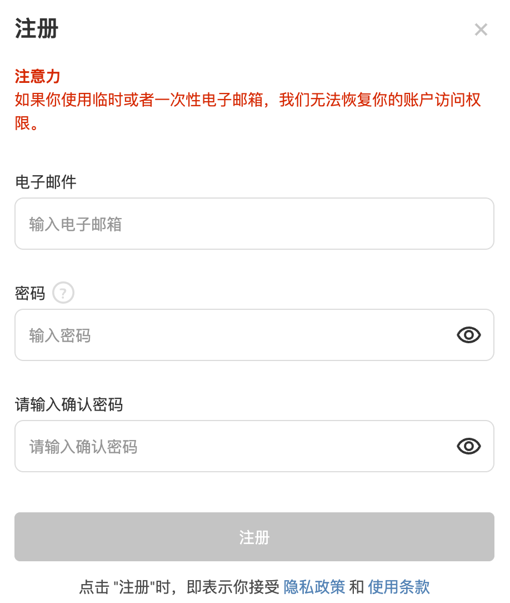
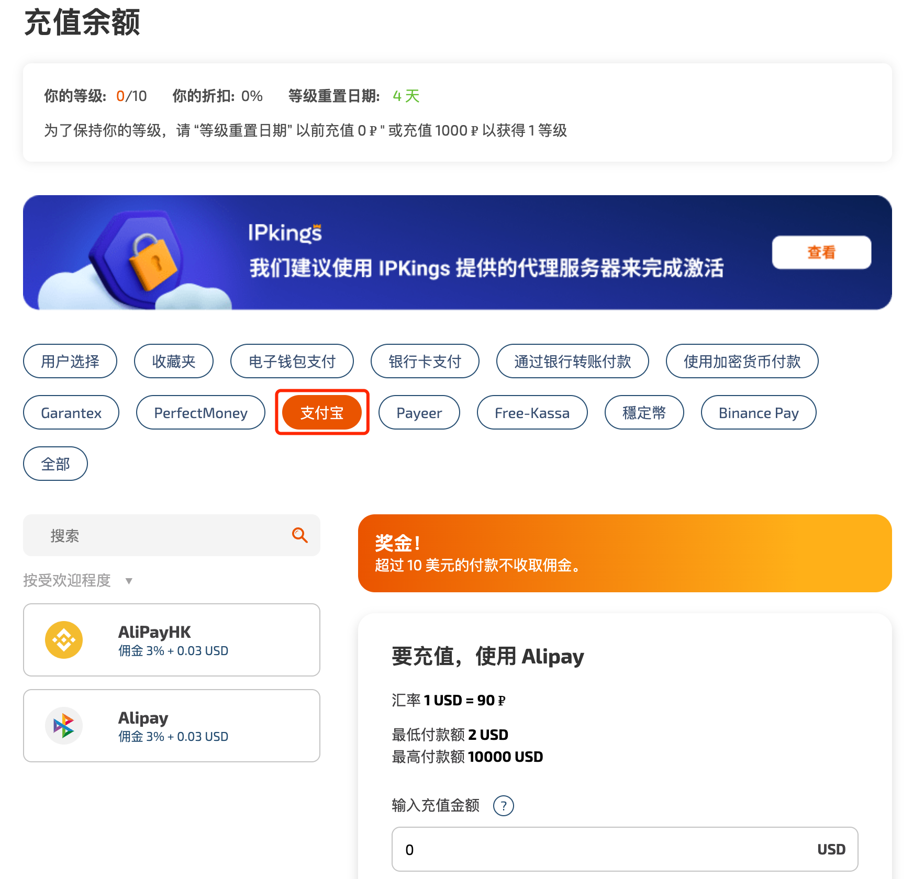
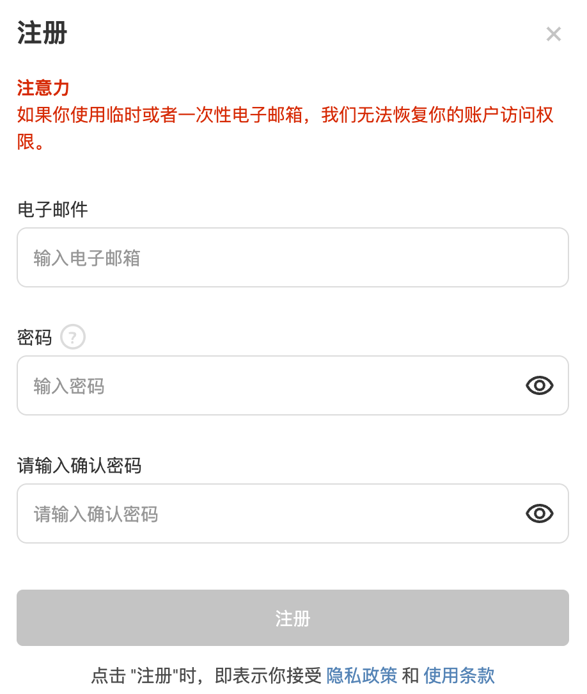
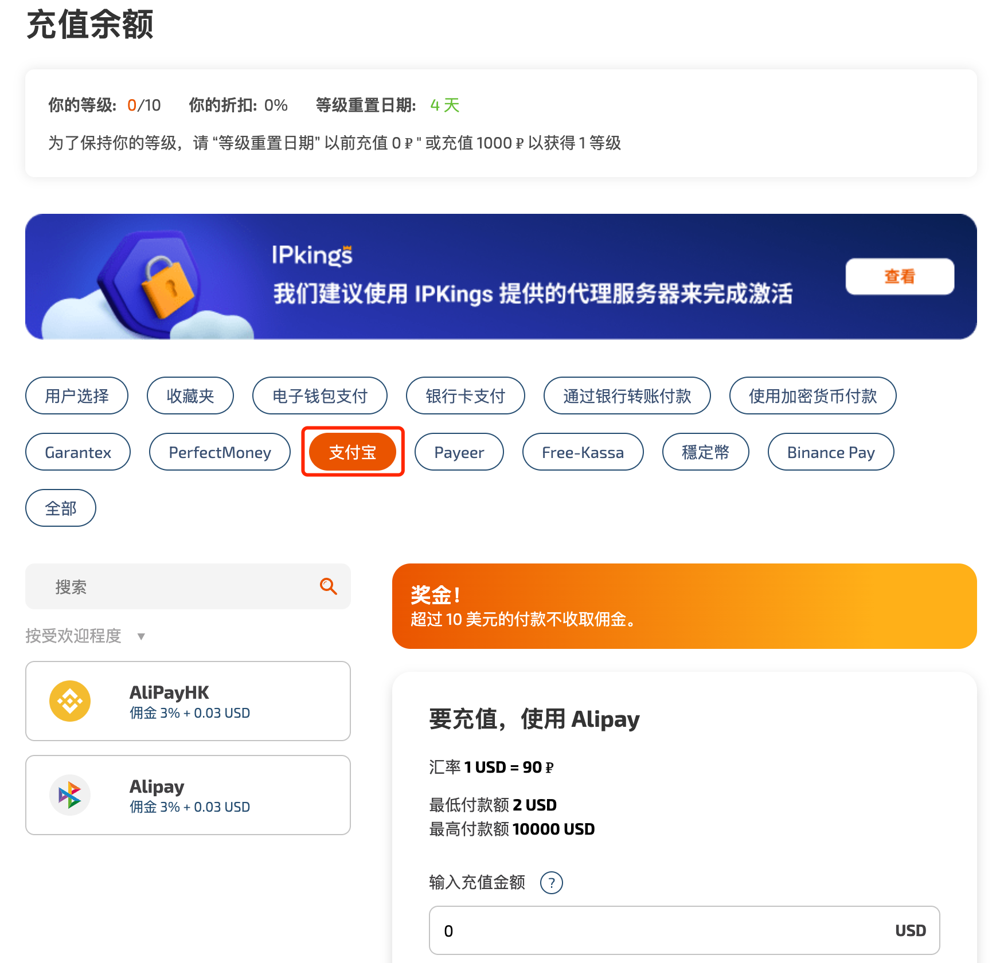
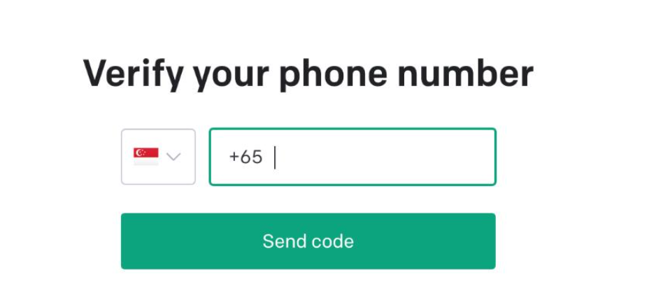
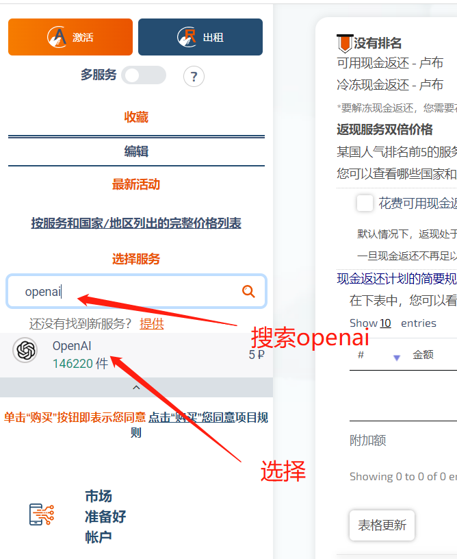
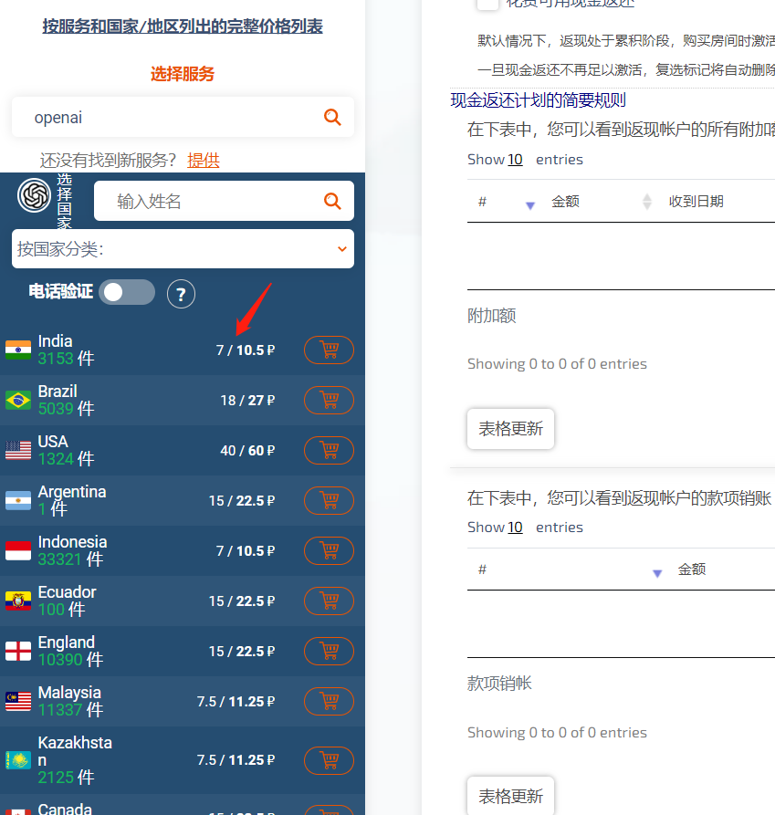
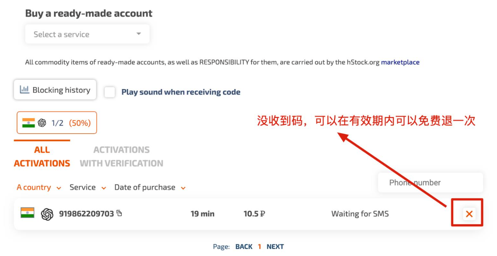
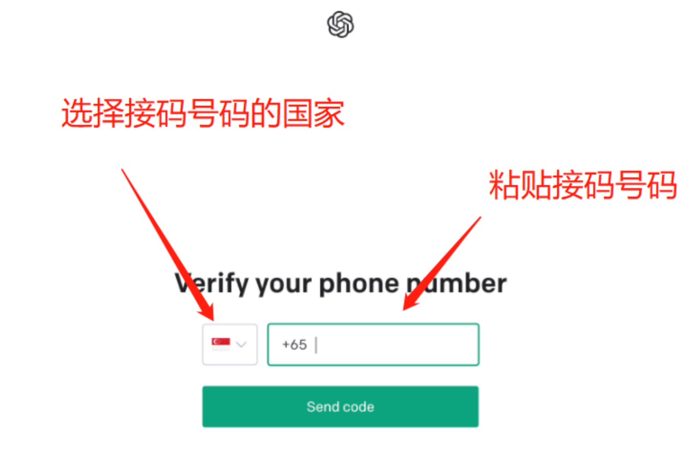

转载自：Read Dev Docs
OpenAI最近推出强大的ChatGPT功能，各大程序员使用后发出感叹：程序员要失业了
不过在国内并不支持OpenAI账号注册，多数会提示：
OpenAI's services are not available in your country.
经过一番搜索后，发现如下方案可以完成注册
前期准备
- 科学上网，最好是美国IP
- 外国邮箱，如gmail、outlook、iCloud邮箱等
- 有一个能收到验证码的外国手机号码，如果你没有，请跳到下一步，注册一个能接验证码的手机号，注意这是收费的！
注册短信平台并充值
打开 https://sms-activate.org/ (opens new window)点击右上角注册
 输入邮箱和密码注册，需要收激活邮件激活账号。

激活账号后，点击充值，可以用支付宝充值1美元，然后支付

支付了可能要等几分钟才显示到余额账户，我在注册时就等了一会余额才显示
输入邮箱和密码注册，需要收激活邮件激活账号。

激活账号后，点击充值，可以用支付宝充值1美元，然后支付

支付了可能要等几分钟才显示到余额账户，我在注册时就等了一会余额才显示
注册 OpenAI 账号
挂上科学访问打开 https://beta.openai.com/signup (opens new window)进行注册，如果没有科学上网会提示无法注册
OpenAI's services are not available in your country.
注册成功后会进入验证手机号页面，选择你下一步短信平台的接码的手机国家
在短信平台接码
右侧服务，输入搜索openai，选择  选择印度或者巴西  现在你有一个可以接码的号码了，图下919862209703就是号码，复制号码到OpenAI验证码界面  输入接码号码，点击“send code”  然后等激活码，如果没有收到可以点OpenAI注册界面再发一次验证码，可以多试几次。
注册完就可以去登录 https://chat.openai.com/auth/login(opens new window)